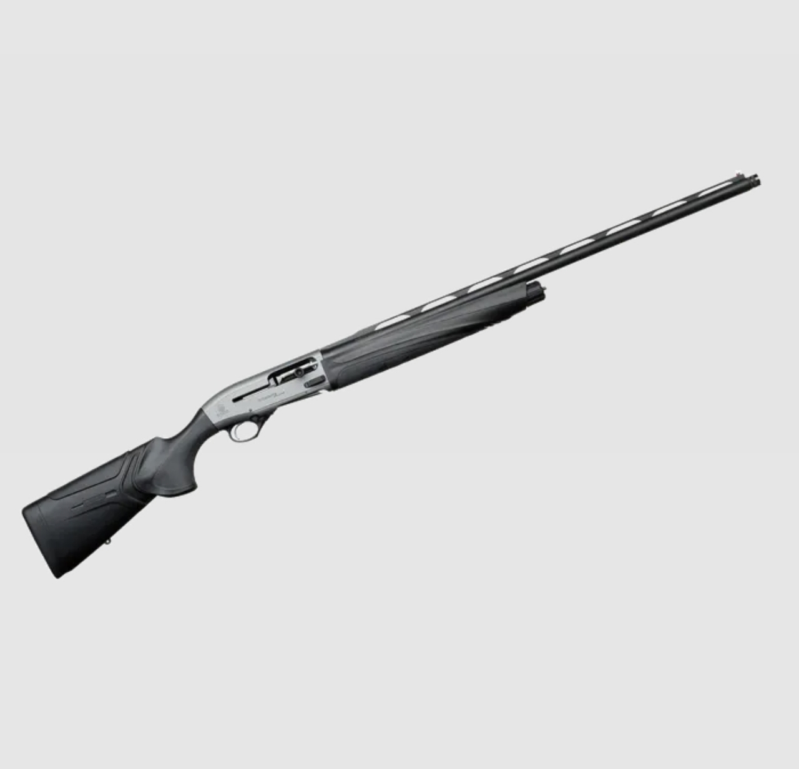
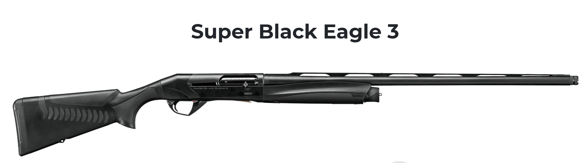

Ask a hunter at first light on the firing line what shotgun they swear by, and the debate may never end. Narrow it to Italy’s two leading semi-auto schools, and the contest usually returns to the same pair: the Beretta A400 Xtreme Plus and the Benelli Super Black Eagle 3 (SBE 3).
Both guns — most often in 12-gauge with a 3½-inch (89 mm) chamber — are mature designs with long field pedigrees. The real difference does not show on climate-controlled shelves; it shows in wadis, on coastal sand, and in cold spray.
Gas breath versus inertia

Beretta A400 (Blink) gas system: Powder gas drives the bolt back, ejects the hull, and chambers the next round. With Kick-Off in the stock, felt recoil is typically softer. On fast flocks — rock dove or turtle dove — that helps keep the muzzle on the line for a second and third shot, and shoulders notice it after a long day.

Benelli SBE 3 (Inertia Driven): No gas pistons and far less carbon packing in gas tubes. A spring in the bolt group uses recoil motion to cycle the action. The forend is slimmer, the gun is often lighter, and pointability on snap shots is a clear strength. Reliability in dirt is the other headline: light mud or sand can often be brushed off so you are back shooting without a full strip-down — a trait coastal and marsh hunters value.
Which way does the scale tip?
If your days are long on foot and you want a lighter gun with simpler cleanup, many hunters lean to the Benelli SBE 3.
If you sit fixed blinds, shoot heavier loads, and want clearer recoil absorption with a quicker second and third bird, the Beretta A400 Xtreme Plus makes a strong field case.
There is no absolute winner — only the system that matches your ground, your shoulder, and how you hunt.